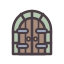
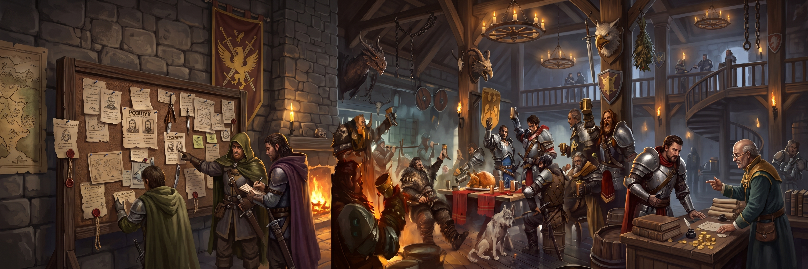
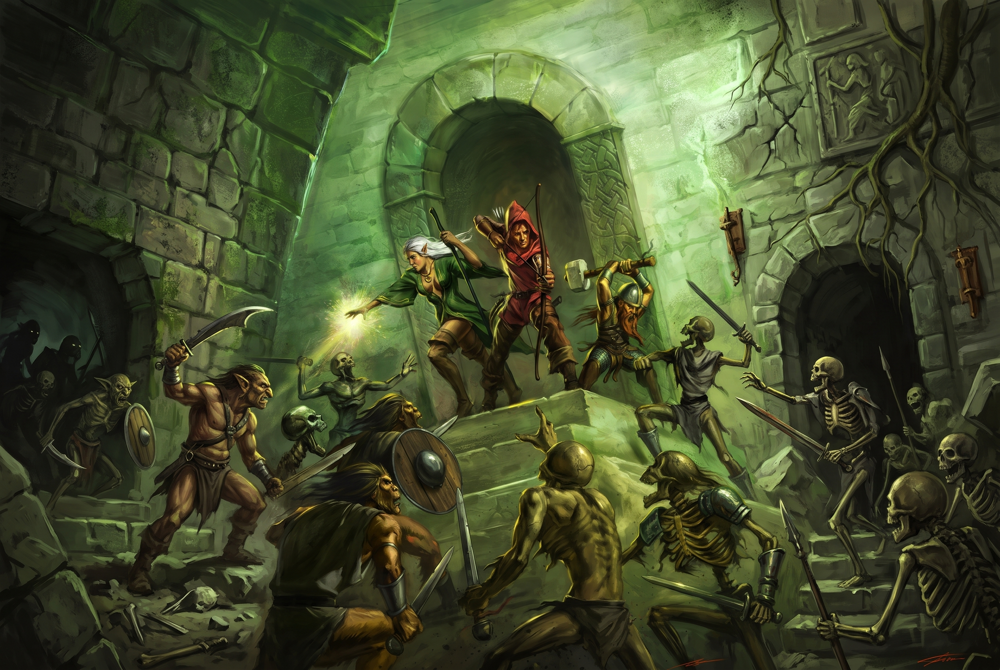
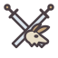
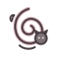
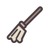
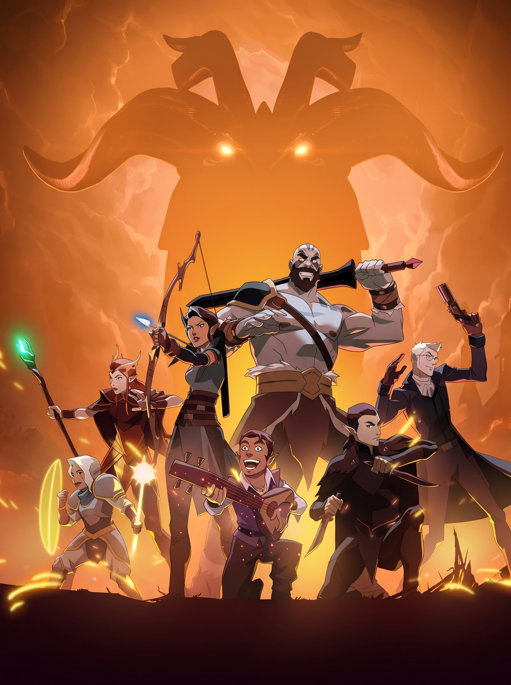
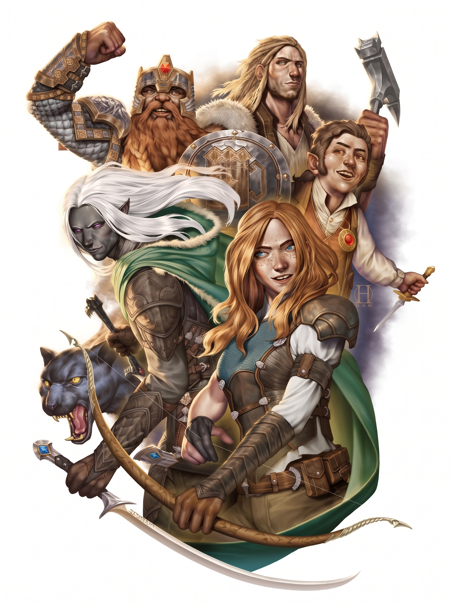
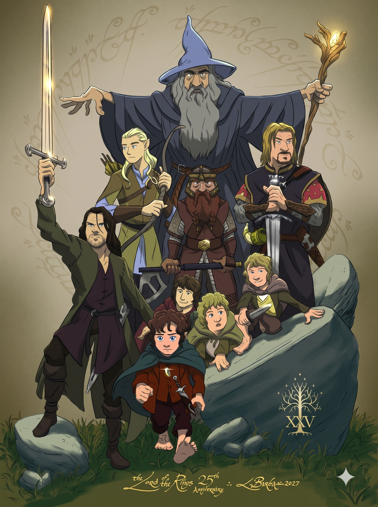

Зачистка підземелля
Підвали, катакомби, покинуті шахти. Заходимо першими, виходимо останніми, а виносимо все, що рухалося, і трохи того, що не рухалося.
Докладніше

Понеділок – п'ятниця: від світанку до заходу
Субота: з 10:00 до останнього тосту
Вихідні:Щонеділі — гільдії на відпочинку
Усі офіційні свята Королівства
Найняті пригодники працють за узгодженим графікомОрганізація Об'єднаних Гільдій Пригодників — це союз гільдій пригодників по всьому світу, які беруться за будь-яку справу: від зачистки підвалів до супроводу караванів крізь Темний ліс. Ми працюємо ще з часів Другої Ери і досі не втратили жодного замовника — принаймні такого, якого можна було врятувати)
Кожне замовлення ми віддаємо тому загону, що підходить саме вам: героям, найманцям або просто міцним хлопцям із мотузкою. Оплата — у грошовому еквіваленті або за домовленістю.

Підвали, катакомби, покинуті шахти. Заходимо першими, виходимо останніми, а виносимо все, що рухалося, і трохи того, що не рухалося.
Докладніше
Гобліни, скелети й великі щури у підвалі вашої таверни — для нас це звичайний вівторок. Ціноутверення відбувається за утвердженим бестіарієм.
ДокладнішеПроведемо караван, обоз чи вашу тітку через ядовиті болота. Охороняємо дороги, таверни та свята, особливо якщо тамада — підозрілий.
ДокладнішеМапи, шпигуни, огляд місцевості. Дізнаємося, що чекає за наступним поворотом, ще до того, як ви в нього завернете.
Докладніше
Розгребемо те, що залишив ваш маг: незрозумілі зілля, ожилі меблі, дивне світіння в льосі. Питання «що це було?» не ставимо — просто прибираємо.
Докладніше
Принести, віднести, полагодити, почухати. Дах, пральня чи драконяче яйце, що не влізає в комору — беремося за все, якщо є платня.
ДокладнішеПеревірені команди, що пройшли вогонь, воду і древнє зло. Кожен загін має власний стиль і роки досвіду(іноді століть).
Усі загони

